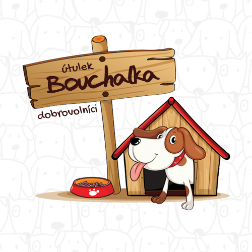
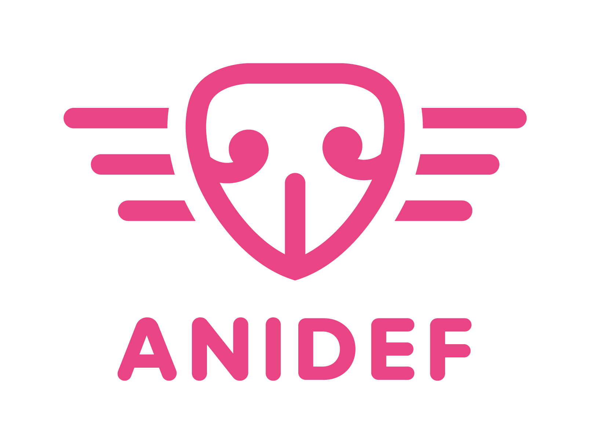

Míst pro opuštěná, zatoulaná, týraná a nechtěná zvířata je dlouhodobě málo. A těch opravdu dobře fungujících ještě méně. Nechtěli jsme nadávat na tmu, když můžeme rozsvítit světlo pro tisíce zvířat.
Budujeme moderní centrum pro zvířata v nouzi. Roky zkušeností v záchraně zvířat a inspiraci z těch nejlepších zařízení v zahraničí jsme přetavili v konkrétní projekt na útulek pro 21. století. Nový útulek tu bude pro každé zvíře, které potřebuje zachránit, vyléčit a připravit pro novou adoptivní rodinu. A bude tu i pro každého z vás – návštěvníků, venčitelů, dobrovolníků nebo třeba zájemců o nového člena rodiny. Připojte se k nám v budování útulku, které bude víc, než jen místo pro opuštěná zvířata.
Kvalitní krmivo a doplňky dle individuálních potřeb. Moderní a důstojné zázemí. Výborná veterinární péče včetně náročných operací a dlouhodobé léčby. Empatičtí, vzdělaní ošetřovatelé. Zvíře v útulku se nemá spokojit s ničím horším, než milovaný zvířecí člen rodiny. Zvířata sem přicházejí ve stavu, kdy naopak potřebují dostat to nejlepší. Prostředí, v němž se každé zvíře může opět cítit v bezpečí.
Venčení, mazlení s kočkami, rande při venčení, víkendový výběh se psím sportovcem nebo půjčení psa na celodenní tůru, odpoledne v kočičím pokojíčku, seznámení se zvířaty pro ty nejmenší. Místo, kde máte prostor vybrat si nejlepšího chlupatého přítele na mnoho let. Zkrátka útulek, který je otevřeným prostorem plným pozitivní energie pro všechny.
Program „Se školou do útulku" funguje v AniDef úspěšně mnoho let. Nejmladší generace se v něm učí empatii, soucitu a zodpovědnosti. Problematika týrání a zanedbávání zvířat je celospolečenský problém, jehož jediným řešením je dlouhodobá a systematická práce s veřejností, a zejména s dětmi. Osvěta je klíčem k dlouhodobé změně.
Chceme řešit problematiku týrání zvířat a nezodpovědného chovu od A do Z. AniDef už dosáhl rozsudků nad majiteli týraných zvířat, pomáhá oznamovatelům, spolupracuje s Krajskou veterinární správou i policií a podílí se na přípravě nových zákonů na ochranu zvířat.
Kočky, zakrslí králíci, exotičtí ptáci, morčata a další drobní mazlíčci – útulek i pro všechna další zvířata, na která myslí málokdo a pro která je zoufale málo bezpečných míst v útulcích. Zejména pomoc kočkám je systematicky podfinancovaná, opomíjená a neřešená na mnoha úrovních. Chceme to změnit.
Téměř 600 m² moderní budovy. Hygienické karanténní prostory, vybavená ošetřovna, sklady, přípravna krmiv, umývárna, socializační prostor. Čerpáme z vlastních zkušeností i z nejlepších zařízení v zahraničí. A v tom všem sehraný, spolehlivý a dobře organizovaný tým.
Není nám líto zvířat v našem útulku. Litujeme ta, která se k nám nedostala.
Erika Eliášová je podnikatelka a influencerka, která se dlouhodobě věnuje pomoci útulkům, zvířatům v nouzi a upozorňuje na konkrétní případy týrání zvířat. Svůj dosah na sociálních sítích využívá ke zvyšování povědomí o problémech, s nimiž se zvířata v českých útulcích potýkají, a přivádí k tématu nové, mladé publikum, které by se jinak možná nikdy nedostalo do kontaktu s útulkovou komunitou.

Skupina dobrovolníků z útulku Bouchalka, kteří se roky snažili pomáhat zdejším psům hledat domovy. Když jim to vedení útulku definitivně znemožnilo, rozhodli se jednak upozornit na zdejší praktiky úřady, jednak hledat nové řešení – kam psy přemístit a jak jim zajistit důstojné podmínky. Jejich odvaha a odhodlání jsou základem tohoto projektu.

Spolek AniDef provozuje úspěšný zvířecí útulek v Žimu u Teplic a usiluje o systémové změny v úrovni péče poskytované v útulcích. Za téměř 10 let existence zachránil více než 3 500 zvířat. AniDef nejen zachraňuje, léčí a vrací do života týraná zvířata, ale také usiluje o potrestání tyranů, spolupracuje s Krajskou veterinární správou i s Policií a podílí se na tvorbě zákonů.
Jako nezisková organizace nemůže svůj majetek jakkoli využít za účelem zisku. V případě ukončení je zákonná povinnost převést veškerý majetek na jinou neziskovou organizaci v oblasti ochrany zvířat.